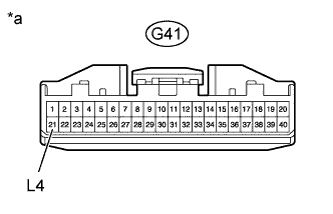
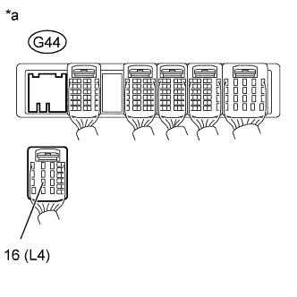

DTC P2772 Four Wheel Drive (4WD) Low Switch Circuit Range / Performance |
| DTC Code | DTC Detection Condition | Trouble Area |
| P2772 | Transfer L4 position switch remains on while the vehicle is being driven under the following conditions for 1.8 sec. or more (1-trip detection logic): (a) Output shaft speed is between 1000 and 3000 rpm. (b) Transfer position switch is in H4. |
|
| 1.CHECK HARNESS AND CONNECTOR (FOUR WHEEL DRIVE CONTROL ECU - BODY GROUND) |
|  |
Disconnect the G41 four wheel drive control ECU connector.
Measure the resistance according to the value(s) in the table below.
| Tester Connection | Condition | Specified Condition |
| G41-21 (L4) - Body ground | Always | 10 kΩ or higher |
| *a | Front view of wire harness connector (to Four Wheel Drive Control ECU) |
|
| ||||
| OK | ||
| ||
| 2.CHECK HARNESS AND CONNECTOR (FOUR WHEEL DRIVE CONTROL ECU - ECM) |
|  |
Disconnect the G44 ECM connector.
Measure the resistance according to the value(s) in the table below.
| Tester Connection | Condition | Specified Condition |
| G44-16 (L4) - Body ground | Always | 10 kΩ or higher |
| *a | Front view of wire harness connector (to ECM) |
|
| ||||
| OK | ||
| ||